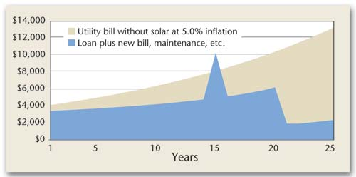
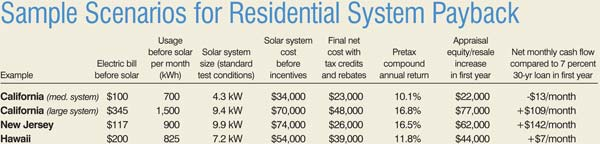

You Can Afford Solar Power
Here’s how to calculate the payback period for a PV system.
October/November 2006
October/November 2006 Issue #218
By Andy Black
For years, questions about returns on the expensive investment in a solar-electric system were dismissed with the analogy, “What’s the payback on your swimming pool?” That sentiment might speak to the converted, but for most people considering solar power, the financial case is a major deciding factor.
Fortunately, photovoltaic (PV) technology has matured such that we now can offer serious answers to the payback question, backed by solid math and accounting. Answers vary significantly by local climate, utility rates and incentives, but in the best cases, the returns will be more than 10 percent, the cash flow positive and the increase in property value greater than the system cost. In other parts of the country where electric rates are low and incentives may be less, a grid-tied system may barely cover its maintenance costs.
What Factors Improve Payback?
The most important factors for making solar an attractive investment include high electric rates, net-metering policies, financial incentives and good sunlight. Unlike the other factors, sunlight is available in almost all of the continental United States.
High electric rates can take various forms. California, Hawaii, New York and other states have average rates well above 15 cents per kilowatt-hour (kWh). California’s tiered pricing system penalizes large residential users with prices as high as 33 cents per kWh. Solar energy offsets highest-tier usage first, making the customer look like a smaller net user.
Under most net-metering laws, which vary by state or utility, solar energy generated by users offsets the retail cost of the electricity they use. Even better, in California, solar systems are allowed to operate on a time-of-use rate schedule, which enables users to sell electricity back to the utility at peak rates, which can be even more valuable. These high rates are the most important factor in improving the payback.
Direct incentives can include tax benefits such as credits or depreciation. A federal tax credit went into effect Jan. 1 for 30 percent of the cost of a solar system, up to $2,000 for residential systems (there’s no cap on commercial credits). For PV systems, that typically means a $2,000 credit on your tax return for the year the system was installed. Then there are state incentives, including rebates, which can discount up to 60 percent of a system’s cost. Some states also offer tax credits, which can further reduce the upfront cost of a system. Consult a certified tax adviser to check the applicability of such incentives to your situation.
A big factor in some calculations is inflation in electric rates. Solar power is an inflation-protected investment, because it offsets electricity costs at the current prevailing retail rate. As rates rise, the owner saves even more. New forms of incentives, including renewable energy credits, or “green tags,” can be combined with net metering and other incentives. With these, a PV system can garner substantial revenue per kWh generated.
Determining Payback
There are several ways to measure the economic value of a solar system: compound annual rate of return, cash flow or increase in property resale value. In the best cases - California and New Jersey - common results are a rate of return well over 10 percent, positive cash flow and an increase in property value that more than covers the cost of the PV system.
Compound annual rate of return. This is another term for interest-rate yield, which is a way of comparing one investment to another. For example, a savings account might pay 1 percent interest, and the long-term stock market has paid about 10.5 percent. Solar systems in California, New Jersey and a few other locations can often produce a pretax compound rate of return of 10 percent or more. Several examples are shown in the table, “Sample Scenarios for Residential System Payback.”
Cash flow. The cash flow will be positive, either immediately or within the first few years, for many homeowners who finance their solar systems using home equity loans.
This calculation compares the estimated savings on the electric bill to the cost of the loan. Monthly loan cost is the principal-plus-interest payment required to pay off the loan, less any tax savings. In the case of “deductible” loans, such as home equity-based loans, the interest is usually tax-deductible, and thus the loan effectively costs less. Home equity loans often are excellent sources of funds because interest rates on real estate-secured loans are relatively low and payment terms can be long.
Inflation plays an important part. Inflation affects electric rates and thus effectively increases the savings from a solar system over time. Inflation doesn’t affect loan rates, particularly with fixed-rate loans. Hence, as electric rates rise, the savings grow, but the cost of the loan stays relatively constant (it rises a little over time as the interest portion of the payment falls, which cuts the tax deductibility). See “Power Costs Compared” for an example. Note that this is an ideal case in a state with the best incentives.
The accumulation of net annual savings is free and clear with no initial outlay of cash, because that was covered by the loan. The savings are small though significant in the first years, but really jump when the loan payments stop.
The table “Sample Scenarios for Residential System Payback” includes several examples showing the initial monthly cash flow, assuming 100 percent financing of a solar system’s net cost.
Increased property resale value. Homes with solar-electric systems increase in value because the systems decrease utility operating costs. According to a 1998 article by Rick Nevin and Gregory Watson in The Appraisal Journal, a home’s value increases $20,000 for every $1,000 reduction in annual operating costs from energy efficiency.
The rationale is that the money from the reduction in operating costs can go toward a larger mortgage with no net change in monthly cost of ownership. Nevin and Watson state that historic mortgage costs have an after-tax effective interest rate of about 5 percent. If $1,000 of reduced operating costs is redirected toward debt service at 5 percent, it can support an additional $20,000 of debt. Instead of paying the utility, the homeowner pays the bank, but total monthly cost of home ownership is identical.
The column labeled “Appraisal equity/resale increase in first year” in the “Sample Scenarios” table shows examples of the increase in home value. This increase can effectively reduce the payback period to zero years if the owner chooses to sell the property immediately, and it removes the purchase risk. It could even lead to a profit on immediate resale in some cases.
Currently, this increase in property value is theoretical. Many of the existing grid-tied solar-electric systems have been installed since 2001. Most of these homes have not been sold, so no broad studies of comparable resale values are available. However, emerging evidence suggests that some solar homes are seeing significant jumps in resale value.
For example, a 2004 National Renewable Energy Laboratory (NREL) study demonstrated that San Diego zero-energy homes with solar features increased in value faster than comparable conventional homes in a nearby community. On average, the homes increased in value $40,000 more than the conventional homes, at a higher rate of appreciation and with a shorter length of ownership. This boost in resale value outstrips any of the estimates shown in the “Sample Scenarios.”
PV systems will appreciate, rather than depreciate, for several years. Appreciation comes from the increasing annual savings the system will yield as electric rates and bill savings rise. It cannot continue forever, however, as the increase in resale value reaches a limit determined by the savings potential during the system’s remaining life. For these analyses, the system is assumed to be worthless at the end of 25 years. (This estimate is conservative, since panels typically are warranted to work at 80 percent of their as-new capability when 25 years old.) If the system is worthless after 25 years, its only value as it nears that time is the savings it can generate before the end of the 25th year. The remaining-value limitation takes over in about the 11th year. (See “Solar and Property Value” for an example.) As the NREL resale study suggests, however, actual resale value could be much higher depending on the market mood for solar.
Markets Reward Investment
For more information on calculating PV system payback, go to www.ongrid.net/payback. Additional tools for calculating payback are listed at left. Be aware that some tools don’t account for tiered or time-of-use electric rates in interaction with PV production, and therefore their results may over- or underestimate the value of a PV system in a particular situation.
Going solar, like any other major purchase, is a “buyer beware” situation. In addition to avoiding oversimplified estimates, be cautious of aggressive sales pitches and overly optimistic financial analyses.
Solar has finally come into its own in certain markets, which are exploding because individuals are discovering the financial benefits of owning PV systems in those regions. To encourage widespread adoption of solar energy, we need to empower everyone with this knowledge and expand the components that make it possible - tiered rates, time-of-use net metering and renewable energy credits. Market forces will take it from there.
Tools for Calculating PV System Payback
Database of State Incentives for Renewable Energy
Solar Energy Industries Association Guide to Federal Tax Incentives
Author’s post of detailed information on calculating various scenarios
Andy Black owns OnGrid Solar, which provides solar financial analysis tools and consultation. He is a board member of the American Solar Energy Society (ASES). He teaches and consults regularly on the payback of solar electricity. Contact him at (408) 428-0808 or andy@ongrid.net.
This article was reprinted fromSolar Today, the excellent magazine published by ASES. A year’s subscription is only $29, a bargain for anyone interested in the latest news on solar and other renewable energy technologies.
|
LIQUID LIBRARY, MATTHEW T. STALLBAUMER In the best cases, the returns on solar power will be more than 10 percent, the cash flow positive and the increase in property value greater than the system cost. |
 ANDY BLACK/ONGRID SOLAR This chart compares costs of utility bills without a solar system to costs of the solar system (loan, lower utility bill and maintenance). It assumes the PV system inverter is replaced at 15 years. The major drop at 20 years represents payoff of the loan. |
 ANDY BLACK/ONGRID SOLAR This chart shows changes in value of a property with a solar system. It appreciates until about year 11, then is limited by the savings the system will provide in its remaining lifetime. |
|
 ANDY BLACK/ONGRID SOLAR Sample Scenarios for Residential System Payback. |
|
|